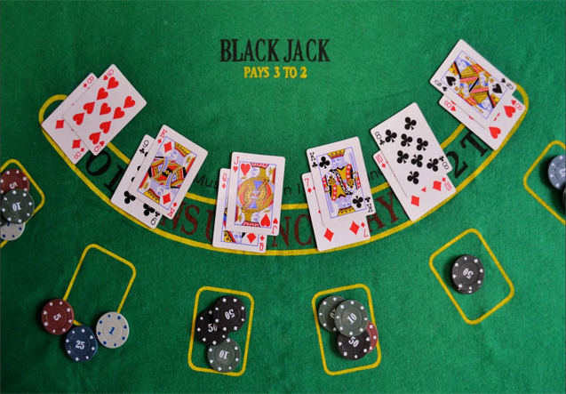
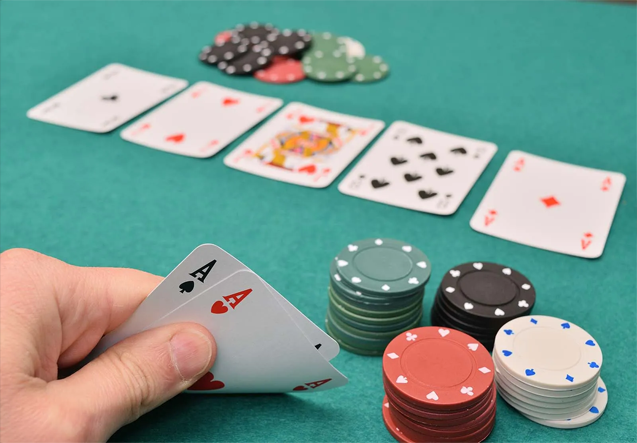
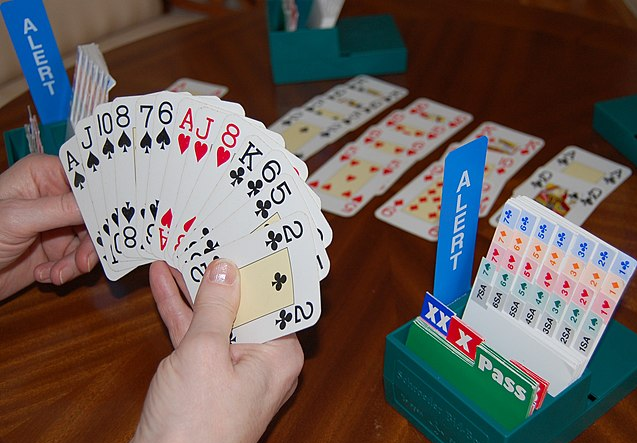

Blackjack

Objetivo del juego
El objetivo del Blackjack es tener una mano de cartas cuyo valor sea lo más cercano a 21 puntos sin excederse.
Compites directamente contra el crupier (no contra los otros jugadores).
Valores de las Cartas
Cartas numeradas (del 2 al 10): Valen su valor nominal (ej. un 6 vale 6 puntos).
Figuras (Jota, Reina, Rey): Valen 10 puntos cada una.
As: Puede valer 1 o 11 puntos, dependiendo de lo que convenga más para la mano del jugador.
Desarrollo del Juego
1. RepartoSe utilizan entre 1 y 8 mazos de cartas barajados juntos.
A cada jugador se le reparten 2 cartas, ambas boca arriba.
El crupier recibe 2 cartas, una boca arriba y otra boca abajo (la carta oculta se llama "hole card").
2. Suma de las CartasLos jugadores suman el valor de sus dos cartas. Si un jugador tiene un As y una carta que valga 10 (un 10, J, Q o K), eso se llama Blackjack y es una victoria automática (a menos que el crupier también tenga Blackjack, en cuyo caso es un empate o "push").
3. Opciones del JugadorDespués del reparto inicial, el jugador tiene varias opciones:
Pedir (Hit): El jugador puede pedir una carta adicional si quiere aumentar el valor de su mano. Puedes pedir tantas cartas como quieras mientras no superes 21.
Plantarse (Stand): Si estás satisfecho con el valor de tus cartas, puedes optar por plantarte y no recibir más cartas.
Doblar (Double Down): Si crees que una sola carta más te pondrá en una buena posición para ganar, puedes doblar tu apuesta original y recibir solo una carta adicional.
Dividir (Split): Si las dos cartas iniciales son del mismo valor (por ejemplo, dos 8), puedes dividirlas en dos manos separadas, duplicar la apuesta original y jugar cada mano por separado.
Rendirse (Surrender): En algunas versiones del juego, si crees que no tienes una buena mano después del reparto inicial, puedes "rendirte" y recuperar la mitad de tu apuesta.
4. Turno del CrupierUna vez que todos los jugadores han terminado sus turnos, el crupier revela su carta oculta y juega su mano.
El crupier debe pedir cartas hasta que su mano sume al menos 17. Si tiene 17 o más, debe plantarse. Si el crupier se pasa de 21, todos los jugadores que aún estén en juego ganan.
5. Determinación del GanadorSi el jugador tiene una mano más cercana a 21 que el crupier, el jugador gana.
Si el crupier tiene una mano más cercana a 21, el jugador pierde.
Si el jugador o el crupier se pasan de 21, pierden automáticamente.
Si hay un empate en el valor de las manos (push), nadie gana ni pierde, y la apuesta se devuelve.
Ejemplo Simplificado
El jugador recibe un 8 y un 7 (15 puntos en total).
El crupier muestra un 9 como su carta visible.
El jugador decide pedir una carta y recibe un 4, ahora tiene 19 puntos. Decide plantarse.
El crupier revela su carta oculta y muestra un 7, sumando 16 puntos. El crupier pide otra carta y obtiene un 6, alcanzando 22 puntos, por lo que se pasa. El jugador gana.
Poker

Reglas
Se juega entre 2 y 8 jugadores.
Se utiliza una baraja francesa de 52 cartas.
Cada jugador recibe un total de 7 cartas durante la mano, de las cuales algunas están boca arriba (visibles) y otras boca abajo (ocultas). El objetivo es formar la mejor mano de 5 cartas.
Tipos de Juegos
- Escalera Real (Royal Flush): A-K-Q-J-10 del mismo palo.
- Escalera de Color (Straight Flush): Cinco cartas consecutivas del mismo palo.
- Póker (Four of a Kind): Cuatro cartas del mismo valor.
- Full (Full House): Tres cartas del mismo valor y dos cartas de otro valor.
- Color (Flush): Cinco cartas del mismo palo, sin importar su secuencia.
- Escalera (Straight): Cinco cartas consecutivas de diferentes palos.
- Trío (Three of a Kind): Tres cartas del mismo valor.
- Doble Pareja (Two Pair): Dos cartas del mismo valor y otras dos de otro valor.
- Pareja (One Pair): Dos cartas del mismo valor.
- Carta Alta (High Card): Cuando no se forma ninguna de las combinaciones anteriores, gana la carta más alta.
Desarrollo del Juego
En el juego casual, el derecho a repartir una mano suele rotar entre los jugadores y está marcado por una ficha llamada botón de repartir (o buck). En un casino, un crupier de la casa maneja las cartas de cada mano, pero el botón (normalmente un disco de plástico blanco) gira en el sentido de las agujas del reloj entre los jugadores para indicar un crupier nominal que determine el orden de las apuestas. Las cartas se reparten en el sentido de las agujas del reloj alrededor de la mesa de póquer, de una en una.
Normalmente, uno o más jugadores tienen que hacer apuestas forzadas, normalmente un ante o una apuesta ciega (a veces ambas). El crupier baraja las cartas, el jugador de la silla de su derecha corta, y el crupier reparte el número apropiado de cartas a los jugadores de una en una, empezando por el jugador de su izquierda. Las cartas pueden repartirse boca arriba o boca abajo, dependiendo de la variante de póquer que se esté jugando. Tras el reparto inicial, comienza la primera de lo que pueden ser varias rondas de apuestas. Entre rondas, las manos de los jugadores evolucionan de alguna manera, a menudo repartiendo cartas adicionales o sustituyendo las cartas repartidas anteriormente. Al final de cada ronda, todas las apuestas se reúnen en el bote central.
En cualquier momento durante una ronda de apuestas, si un jugador apuesta, ningún oponente decide igualar la apuesta y todos los oponentes se retiran, la mano termina inmediatamente, el apostante se lleva el bote, no es necesario mostrar cartas y comienza la siguiente mano. Esto es lo que hace posible el farol o engaño. El farol es una característica principal del póquer, que lo distingue de otros juegos de apuestas y de otros juegos que utilizan clasificación de manos de póquer.
Al final de la última ronda de apuestas, si queda más de un jugador, los jugadores revelan sus cartas previamente ocultas y evalúan sus manos. El jugador con la mejor mano según la variante de póquer que se esté jugando gana el pozo.
Bridge

Objetivo del Juego
El objetivo en bridge es ganar más bazas que la pareja contraria. Una "baza" es cada ronda de cuatro cartas jugadas, una por cada jugador.
Componentes del juego:
Jugadores: 4 jugadores, divididos en dos parejas.
Cartas: Se utiliza una baraja estándar de 52 cartas. Los palos son tréboles (♣), diamantes (♦), corazones (♥) y picas (♠). El orden de las cartas de mayor a menor es As, Rey, Dama, Jota, 10, 9, 8, 7, 6, 5, 4, 3, 2.
Parejas: Los jugadores se sientan de tal manera que los compañeros estén enfrentados.
Fases del Juego
Reparto:
Cada jugador recibe 13 cartas.
Subasta:
Los jugadores intentan determinar cuál es el contrato que su pareja va a intentar cumplir. El contrato es el número de bazas que intentarán ganar.
La subasta comienza por el jugador a la izquierda del repartidor y continúa en el sentido de las agujas del reloj.
Cada jugador puede hacer una oferta o pasar. Las ofertas se expresan en términos de un número de bazas más de seis (mínimo 7) y un palo determinado o sin palo (notrump).
Ejemplo: "1 ♠" significa que la pareja intentará ganar al menos 7 bazas con el palo de picas como triunfo.
La subasta termina cuando tres jugadores consecutivos han pasado, y la oferta final se convierte en el contrato.
Juego de las bazas:
El jugador a la izquierda del que ha ganado la subasta comienza jugando la primera carta. Este jugador se llama el "salidor".
El compañero del que ha ganado la subasta coloca sus cartas boca arriba en la mesa (se llama "el muerto"), y el otro jugador de la pareja juega las cartas del muerto.
Los jugadores deben seguir el palo de la carta jugada si pueden. Si no tienen cartas de ese palo, pueden descartar cualquier otra carta o jugar una carta del palo de triunfo (si hay uno).
La baza la gana el jugador que ha jugado la carta más alta del palo jugado, a menos que se haya jugado una carta de triunfo, en cuyo caso la carta más alta de triunfo gana la baza.
Puntuación:
Si la pareja que ganó la subasta cumple el contrato, obtiene puntos dependiendo del nivel del contrato y el palo de triunfo (o sin triunfo). Si no lo logran, la pareja contraria obtiene puntos.